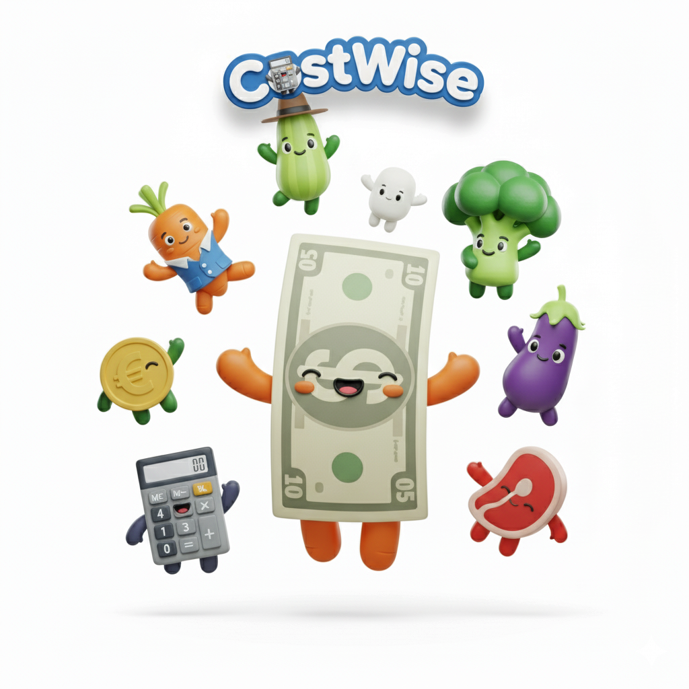

Chunky 3D characters, soft studio light, no outlines. Produce and money share the frame as equals — that's the whole idea. Use one scene at a time, on cream or green-50, never over photography.
assets/brand-illustration-cast.png